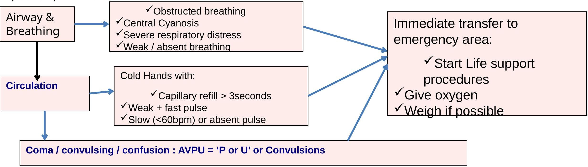
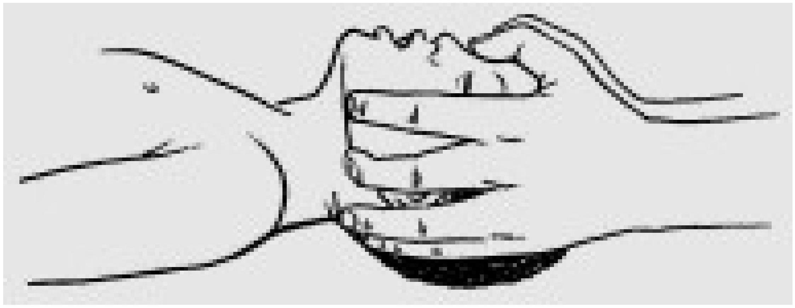
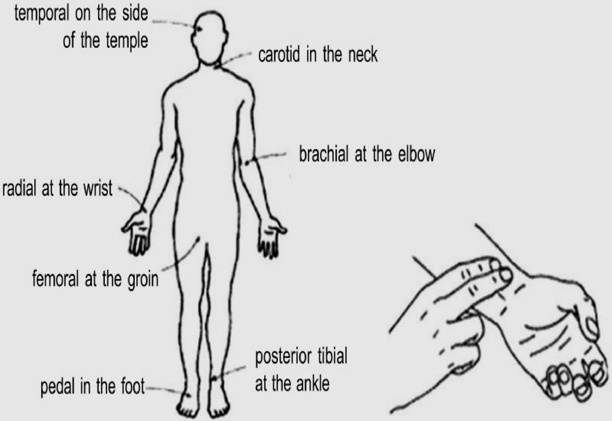
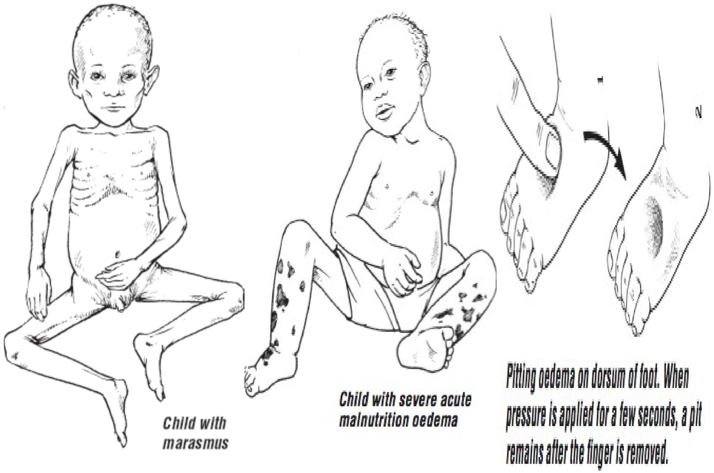
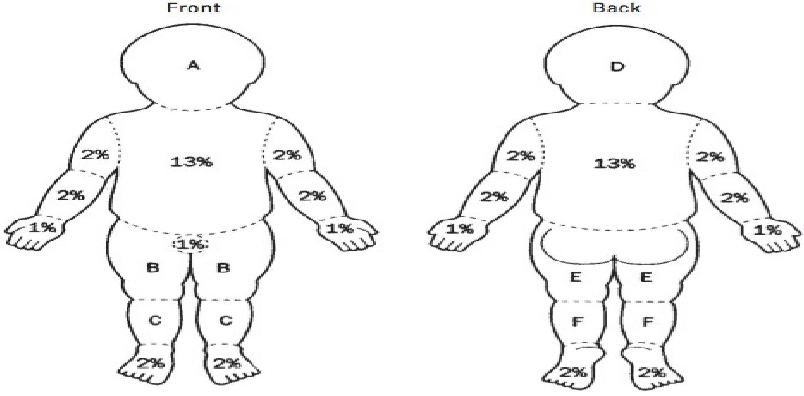

ETAT-PLUS EMERGENCY TRIAGE ASSESSMENT &TREATMENT
PEADIATRIC EMERGENCIES-NURSING
INTRODUCTION
Many deaths in hospital occur within 24 hours of admission. Some of these deaths can be prevented if very sick children are quickly identified on their arrival and treatment is started without delay. In many hospitals around the world, children are not checked before a senior health worker examines them; as a result, some seriously ill patients have to wait a very long time before they are seen and treated.
Children are known to have died of a treatable condition when waiting in the queue for their turn.
The idea of triage is to prevent this from happening. The word "triage" means sorting. The use of triage to prioritize the critically ill dates back to the early 19th century, when this was developed by military surgeons in the Napoleonic war between France and Russia.
Triage is the process of rapidly examining sick children when they first arrive in order to place them in one of the following categories:
- Those with EMERGENCY SIGNS who require immediate emergency treatment.
- Those with PRIORITY SIGNS who should be given priority in the queue so they can be rapidly assessed and treated without delay.
- Those who have no emergency or priority signs and are NON-URGENT cases. These children can wait their turn in the queue for assessment and treatment. The majority of sick children will be non-urgent and will not require emergency treatment.
Ideally, all children should be checked on their arrival by a person who is trained to assess how ill they are. This person decides whether the child will be seen immediately and receive life-saving treatment, or will be seen soon, or can safely wait for his or her turn to be examined.
Categories after triage: Action required:
EMERGENCY CASES Need immediate emergency treatment
PRIORITY CASES Need assessment and rapid attention
QUEUE or NON-URGENT CASES Can wait their turn in the queue.
The ABCD concept
Triage of patients involves looking for signs of serious illness or injury. These emergency signs relate to the; Airway-Breathing-Circulation/Consciousness-Dehydration and are easily remembered as "ABCD".
Each letter refers to an emergency sign which, when positive, should alert you to a patient who is seriously ill and needs immediate assessment and treatment.
- A -Airway
- B-Breathing
- C - Circulation
- C-coma
- C-convulsion
- D- Dehydration (severe)
First, check for emergency signs in three steps:
- Step 1. Check whether there is any airway or breathing problem; start immediate treatment to restore breathing. Manage the airway and give oxygen.
- Step 2. Quickly check whether the child is in shock or has diarrhoea with severe dehydration. Give oxygen start IV fluid resuscitation. In trauma, if there is external bleeding, compress the wound to stop further blood loss.
- Step 3. Quickly determine whether the child is unconscious or convulsing. Give IV glucose for hypoglycaemia and / or an anti-convulsant for convulsing.
Emergency signs include:
- obstructed or absent breathing
- severe respiratory distress
- central cyanosis
- signs of shock (cold hands, capillary refill time longer than 3 s, high heart rate with weak pulse, and low or unmeasurable blood pressure)
- coma (or seriously reduced level of consciousness)
- convulsions
- signs of severe dehydration in a child with diarrhoea (lethargy, sunken eyes, very slow return after pinching the skin or any two of these).
Children with these signs require immediate emergency treatment to avert death.
Priority signs
Besides the group of emergency signs described above, there are priority signs, which should alert you to a child who needs prompt, but not emergency assessment. These signs can be remembered with the symbols 3 TPR - MOB:
- Tiny baby: any sick child aged under two months
- Temperature: child is very hot
- Trauma or other urgent surgical condition
- Pallor (severe)
- Poisoning
- Pain (severe)
- Respiratory distress
- Restless, continuously irritable, or lethargic
- Referral (urgent)
- Malnutrition: Visible severe wasting
- Oedema of both feet
- Burns
Triage of sick children: Emergency Signs
If history of trauma ensure cervical spine is protected
Diarrhoea with sunken eyes → assessment / treatment for severe dehydration
Priority signs
- Tiny - Sick infant aged < 2 months
- Temperature - very high > 39.5°C
- Trauma - major trauma
- Pain - child in severe pain
- Poisoning - mother reports poisoning
- Pallor - severe palmar pallor
- Restless / Irritable / Floppy
- Respiratory distress
- Referral - has an urgent referral letter
Front of the Queue - Clinical review as soon as possible:
- Weigh
- Baseline observations
- Malnutrition - Visible severe wasting
- Oedema of both feet
- Burns - severe burns
Non-urgent - Children with none of the above signs.
The frequency with which children showing some of these priority signs appear in the outpatient department depends on the local epidemiology. The signs might need to be adapted accordingly, for example by including signs for common severe conditions which cannot wait in your setting.
The triaging process
Triaging should not take much time. For a child who does not have emergency signs, it takes on average 20 seconds.
The health worker should learn to assess several signs at the same time. A child who is smiling or crying does not have severe respiratory distress, shock or coma. The health worker looks at the child, observes the chest for breathing and priority signs such as severe malnutrition and listens to abnormal sounds such as stridor or grunting.
Several methods are available to facilitate the triaging process. One example is a stamp being used in Malawi consisting of the "ABCD" signs in which the health worker circles the correct step and initiates emergency treatment "E" or puts them in priority groups "P" or "Q" for children who can wait in the queue.
Colours can also be used for differentiating the three groups, giving a red sticker to emergency cases, a yellow for priority and green for the queue.
- A Airway
- B Breathing
- C Circulation
- Cm Coma
- Cn Convulsion
- D Dehydration (severe)
- E Emergency
- P Priority
- Q Queue
WHEN AND WHERE SHOULD TRIAGING TAKE PLACE?
Triage should be carried out as soon as a sick child arrives in the hospital, well before any administrative procedure such as registration. This may require reorganizing the flow of patients in some locations.
Triage can be carried out in different locations - e.g. in the outpatient queue, in the emergency room, or in a ward if the child has been brought directly to the ward at night.
In some settings, triage is done in all these places. Emergency treatment can be given wherever there is room for a bed or trolley for the sick child and enough space for the staff to work on the patient, and where appropriate drugs and supplies are easily accessible.
If a child with emergency signs is identified in the outpatient queue, he/she must quickly be taken to a place where treatment can be provided immediately, e.g. the emergency room or ward.
WHO SHOULD TRIAGE?
All clinical staff involved in the care of sick children should be prepared to carry out rapid assessment in order to identify the few who are severely ill and require emergency treatment.
If possible, all such staff should be able to give initial emergency treatment, as described in the flowchart and treatment charts.
In addition, people such as gatemen, record clerks, cleaners, janitors who have early patient contact should be trained in triage for emergency signs and should know where to send people for immediate management.
HOW TO TRIAGE?
Keep in mind the ABCD steps: Airway, Breathing, Circulation, Coma, Convulsion, and Dehydration.
When ABCD has been completed the child should be assigned to one of:
- Emergency (E)
- Priority (P)
- Non-urgent and placed in the Queue (Q).
1. Assess airway and breathing
The most common cause of breathing problems in children during emergencies is pneumonia. However, other causes can also lead to breathing problems, including anemia, sepsis, shock and exposure to smoke. Obstructed breathing can be caused by infection (for example croup) or an object in the airway.
The child has an airway or breathing problem if any of these signs are present.
- Child is not breathing.
- Child has central cyanosis (bluish color).
- Severe respiratory distress with fast breathing or chest indrawing.
Assess for an airway or breathing problem.
- Is the child breathing?
- Is there central cyanosis?
- Is there severe respiratory distress?
- If there is severe respiratory distress, does breathing appear obstructed? The child with obstructed breathing will appear to have difficulty breathing with little air entering the lungs. Sometimes the child will make a sound (stridor) as some air moves past the obstruction.
Assessment of fast breathing.
Count breaths FOR ONE FULL MINUTE to assess fast breathing.
| If the child is: | The child has fast breathing if you count: |
|---|---|
| Less than 2 months | 60 breaths per minute or more |
| 2 months up to 12 months | 50 breaths per minute or more |
| 12 months up to 5 years | 40 breaths per minute or more |
Look for chest indrawing.
Chest indrawing is the inward movement of the lower chest wall when the child breathes in and is a sign of respiratory distress. Chest indrawing does not refer to inward movement of the soft tissue between the ribs.
Emergency management of airway and breathing problems
An airway or breathing problem is life-threatening. This child needs immediate treatment to improve or restore breathing.
- If the airway appears obstructed, open the airway by tilting the head back slightly.
- If the child may have a neck injury, do not tilt the head, but use the jaw thrust without head tilt
- Give oxygen if possible.
- Provide management for the underlying cause of airway or breathing problem:
- Cough (pneumonia)
- Pallor (anemia)
- Fever (malaria, meningitis, sepsis)
- Shock (see below)
- Poisoning.
Figure: Jaw thrust without head tilt when trauma is suspected.
2. Assess the circulation for signs of shock
Common causes of shock include dehydration from diarrhoea, sepsis, anaemia (for e.g. due to severe blood loss after trauma, poisoning or severe malaria).
The child has shock (a blood circulation problem) if the following signs are present:
- cold hands AND
- capillary refill longer than 3 seconds
- OR weak and fast pulse.
Capillary refill is the amount of time it takes for the pink colour to return after applying pressure to whiten the nail of the thumb or big toe for 3 seconds.
Assess the child's circulation.
- Is the child's hand cold?
- If yes, is the capillary refill longer than 3 seconds? Classify the child as having SHOCK if the capillary refill takes longer than 3 seconds.
- Check the pulse. Is the pulse weak and rapid?
To check the pulse, first feel for the radial pulse. If it is strong and not obviously rapid, the pulse is adequate. No further examination is needed.
If you cannot feel a radial pulse or if it feels weak, check a more central pulse.
- In an infant (age less than one year), move up the forearm and try to feel the brachial pulse, or if the infant is lying down, feel for the femoral pulse.
- If the more central pulse feels weak, decide if it also seems rapid.
Classify the child as having SHOCK if the pulse is weak and rapid.
Emergency management of the shocked child
A child who is in shock must be given intravenous (IV) fluids rapidly. A bolus (large volume) of fluid is pushed in rapidly in a child with shock who does not have severe malnutrition.
- Insert an intravenous (IV) catheter and begin giving fluids rapidly for shock. Normal (0.9%) saline or Ringer's lactate solution can be used for rapid fluid replacement. Give 20 mL/kg of fluid and reassess the signs of shock. 20 mL/kg boluses can be give two more times if signs of shock persist.
- If you are not able to insert a peripheral intravenous (IV) catheter after 3 attempts, insert a scalp intravenous (IV) catheter or intraosseous line.
- If the child has severe malnutrition, the fluid should be given more slowly and the child monitored very closely. Children with severe malnutrition can go into congestive heart failure from intravenous fluids.
- Apply pressure to stop any bleeding.
- Give oxygen if possible.
Location of the major arteries to assess the pulse
3. Assess for convulsions and coma
Common causes of convulsions in children include meningitis, cerebral malaria and head trauma.
Signs of convulsions include:
- sudden loss of consciousness
- uncontrolled, jerky movements of the limbs
- stiffening of the child's arms and legs
- unconscious during and after the convulsion.
Emergency management of the convulsing child
Treatment of the convulsing child includes the following steps:
- Ensure the mouth and airway are clear, but do not insert anything into the mouth to keep it open
- Turn the child on his or her side to avoid aspiration.
- Give intravenous (IV) glucose.
- Treat with diazepam or paraldehyde (phenobarbital for neonates)
- Option 1: diazepam intravenously (IV) (0.3 mg/kg to a total dose of 10 mg) as slow infusion over 2 minutes
- Option 2: diazepam rectally (0.5 mg/kg) administered by inserting a (1 mL) syringe without needle into the rectum
- Option 3: paraldehyde (0.2 mL/kg to maximum of 10 mL) by deep intramuscular (IM) injection into the anterior (front) thigh
- Option 4: paraldehyde rectally (0.4 mL/kg) administered by inserting a (1 mL) syringe without needle into the rectum
- For neonates (< 1 month of age): Phenobarbital 20 mg/kg IV/IM. If convulsions continue, add 10 mg/kg after 30 minutes.
- If the child is conscious, feed the child frequently every 2 hours.
Common causes of loss of consciousness or lethargy or irritability and restlessness include meningitis, sepsis, dehydration, malaria, low blood sugar and severe anemia.
Assess the child for unconsciousness or lethargy
- If the child is not awake and alert, try to arouse the child by talking to him or her.
- Then shake the arm to try to wake the child.
- If there is no response to shaking, squeeze the nail bed of a fingernail to cause mild pain.
- If the child does not respond to voice or shaking of the arm, the child is unconscious.
Emergency management of the unconscious child
Treatment of the unconscious child includes:
- management of the airway
- positioning the child (in case of trauma, stabilize neck first so that it does not move)
- giving intravenous (IV) glucose
- management of the underlying cause of loss of consciousness in children WITH fever:
- malaria, meningitis, sepsis
- management of the underlying cause of loss of consciousness in children WITHOUT fever:
- Dehydration
- Anaemia
- Poisoning.
Assess the child for irritability or restlessness by looking for:
- difficulty in calming the child.
- persistent signs of discomfort or crying.
- continued, abnormal movement without periods of calm.
If you suspect trauma which might have affected the neck or spine, do not move the head or neck as you treat the child and continue the assessment.
- Ask if the child has had trauma to his head or neck, or a fall which could have damaged his spine.
- Look for bruises or other signs of head or neck trauma.
Causes of low blood glucose include sepsis, diarrhea, malaria and burns.
How to measure the blood glucose using a glucose strip:
- Put a drop of the child's blood on the strip.
- After 60 seconds, wash the blood off gently with drops of cold water.
- Compare the color with the key on the side of the bottle.
- If the blood glucose is less than 2.5 mmol/litre, the child has low blood glucose and needs treatment.
Management of the child with low blood sugar (glucose)
If the child is unconscious, start an intravenous (IV) infusion of glucose solution
- Once you are sure that the IV is running well, give 5 mL/kg of 10% glucose solution (D10) over a few minutes, or give 1 mL/kg of 50% glucose solution (D50) by very slow push.
- Then insert a nasogastric tube and begin feeding every 2 hours.
4. Assess for severe dehydration
Diarrhoea is one of the commonest causes of death among under-five children. Death most commonly is due to dehydration. Children with signs of severe dehydration (such as sunken eyes, severely reduced skin pinch, lethargy or unconsciousness, or inability to drink or breastfeed) need emergency management with replacement fluids.
To assess if the child has circulation problems you need to know:
- ? Does the child have warm hands?
- ? If not, is the capillary refill time longer than 3 seconds?
- ? And is the pulse weak and fast?
In the older child the radial pulse may be used; however, in the infant, the brachial or femoral pulses may need to be felt.
To assess for coma you need to know:
A rapid assessment of conscious level can be made by assigning the patient to one of the AVPU categories:
- A Alert
- V responds to Voice
- P responds to Pain
- U Unresponsive
A child who is not alert but responds to voice is lethargic. If the assessment shows that the child does not respond to voice and only responds to pain (with targeted or untargeted movements), or does not respond at all, the level is at "P" or "U". We then refer to that child as having coma and the child needs to be treated accordingly.
To assess for dehydration you need to know:
- If the child is lethargic or unconscious
- If the child has sunken eyes
- If the skin pinch goes back very slowly
When ABCD has been completed and there are no emergency signs, continue to assess the priority signs.
ASSESSING PRIORITY SIGNS
If the child does not have any of the E signs, the health worker proceeds to assess the child on the priority signs. This should not take more than few seconds. Some of these signs will have been noticed during the ABCD triage discussed so far, and others need to be rechecked. Follow the 3 TPRMOB to quickly complete this section.
1. Tiny infant (less than two months of age)
If the child appears very young, ask the mother his age. If the child is obviously not a young infant, you do not need to ask this question.
Small infants are more difficult to assess properly, more prone to getting infections (from other patients), and more likely to deteriorate quickly if unwell. All tiny babies of under two months should therefore be seen as a priority
2. Temperature: Hot (fever - high Temperature)
A child that feels very hot may have high fever. Children with high fever on touch need prompt treatment.
Take the waiting child to the front of the queue and take locally adopted action, like having the temperature checked by thermometer, giving an antipyretic, or doing investigations like a blood film for malaria.
3. Severe Trauma (or other urgent surgical condition)
Usually this is an obvious case, but one needs to think of acute abdomen, fractures and head injuries in this category.
4. Severe Pallor
Pallor is unusual paleness of the skin, and severe pallor is a sign of severe anaemia which might need urgent transfusion.
It can be detected by comparing the child's palms with your own. If the palms are very pale (almost paperwhite), the child is severely anaemic.
5. Poisoning
A child with a history of swallowing drugs or other dangerous substances needs to be assessed immediately, as he can deteriorate rapidly and might need specific treatments depending on the substance taken. The mother will tell you if she has brought the child because of possible intoxication
6. Severe Pain
If a child has severe pain and is in agony, she/he should be prioritized to receive early full assessment and pain relief. Severe pain may be due to severe conditions such as acute abdomen, meningitis, etc.
7. Lethargy or Irritable and Restless
Recall from your assessment of coma with the AVPU scale whether the child was lethargic. A lethargic child responds to voice but is drowsy and uninterested (V in the AVPU scale).
The continuously irritable or restless child is conscious but cries constantly and will not settle.
8. Respiratory distress
When you assessed the airway and breathing, did you observe any respiratory distress? If the child has severe respiratory distress, it is an emergency. There may be signs present that you do not think are severe, e.g. lower chest wall indrawing (not severe), or difficulty in breathing. In this case, the child does not require emergency treatment but will need urgent assessment. Decisions on the severity of respiratory distress come with practice. If you have any doubts, have the child seen and treated immediately.
9. Urgent Referral
The child may have been sent from another clinic. Ask the mother if she was referred from another facility and for any note that may have been given to her.
Read the note carefully and determine if the child has an urgent problem.
10. Severe wasting (Severe Malnutrition)
A child with visible severe wasting has a form of malnutrition called marasmus. To assess for this sign, look rapidly at the arms and legs as well as the child's chest.
Oedema of both feet
Oedema of both feet is an important diagnostic feature of kwashiorkor, another form of severe malnutrition. Other signs are changes in the skin and hair.
Chart for estimating the percentage of body surface burnt
Estimate the total area burnt by adding the percentage of body surface area affected as shown in the figure; refer to the table for areas A - F, which change according to the age of the child.
| Area | By age in years | |||
|---|---|---|---|---|
| 0 | 1 | 5 | 10 | |
| Head (A/D) | 10% | 9% | 7% | 69% |
| Thigh (B/E) | 3% | 3% | 4% | 5% |
| Leg (C/F) | 2% | 3% | 3% | 3% |
11. Major Burn
Burns are extremely painful and children who seem quite well can deteriorate rapidly. If the burn occurred recently, it is still worthwhile to cool the burnt area with water, for example, by sitting the child in a bathtub with cool water. Any child with a major burn, trauma or other surgical condition needs to be seen quickly. Get surgical help or follow surgical guidelines.
Triage all sick children. When a child with emergency signs is identified, take to the emergency room or treatment area and start the appropriate emergency treatments immediately. Do not proceed to the next step before treatment is begun for a positive sign.